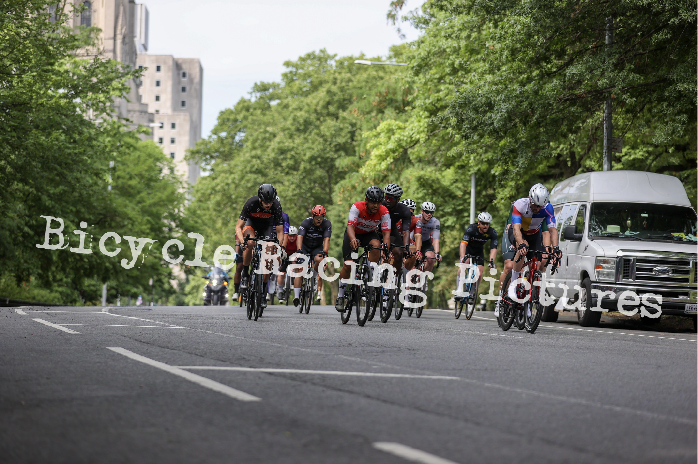

Zach Hojeibane
I am a freelance digital product designer, with a focus on optimizing opperationally critical processes via implementation of human backed data.
Zach's creative work spans a multitude of industries, however one aspect reamins the same. Zach values the ubiased use of human and perfomance data in order to make the most imformed descisions possible. Zach thinks before he leaps, but when he leaps, new heights can be explored.
Zach is also an avid bike racer, tennis coach, and lover of all things outdoors.
Accolades
Pratt School Of Design :
-
As an Information Experience Design graduate student, Zach has been honing his skills as a robust product designer
- Full time student
- Partenred with real institutions to help them acheive their product goals (learn more here)
Expereicne
- UX research (see projects)
- Design skill (see projects)
- Prototyping: rapid, and iterative (see projects)
Key Statistics
- Improved Cardstory's in app trading engagement by over 200%
- Satisfied 10/10 stakeholders with a design system proposal
- Streamlined NYCT's information artchitecture by over 20%!
Your needs
- Are you a small business?
- Are you looking to hire an ad agency?
- Are you in need of complex digital solutions quickly?